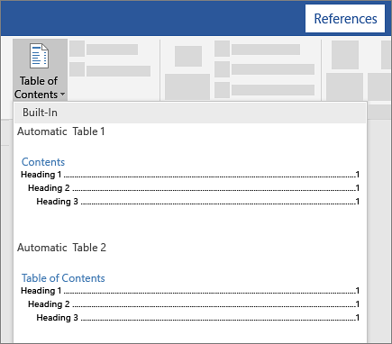

Create the table of contents
-
Put your cursor where you want to add the table of contents.
-
Go to References > Table of Contents. and choose an automatic style.

-
If you make changes to your document that affect the table of contents, update the table of contents by right-clicking the table of contents and choosing Update Field.
If you have missing entries
Missing entries often happen because headings aren't formatted as headings.
-
For each heading that you want in the table of contents, select the heading text.
-
Go to Home > Styles, and then choose Heading 1.
-
Update your table of contents.
To update your table of contents manually, see Updates the table of contents.